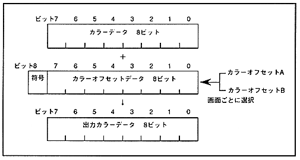

As the color offset value, two values of color offset A and color offset B can be set for each RGB, and you can specify which of these two to use for each screen. The color offset value is 9-bit data corresponding to each RGB, and when the color data added to each RGB is smaller than 00H, the color data is set to 00H and larger than FFH. In all such cases, FFH is assumed.
Since the color offset function is processed after the color calculation function, the color offset value is added to the color data resulting from the color calculation. Since the color calculation result screen is regarded as the top image screen, the color offset enable register is specified by the top image screen bit.
The color offset data is shown in Figure 13.1.
Figure 13.1 Color offset data
